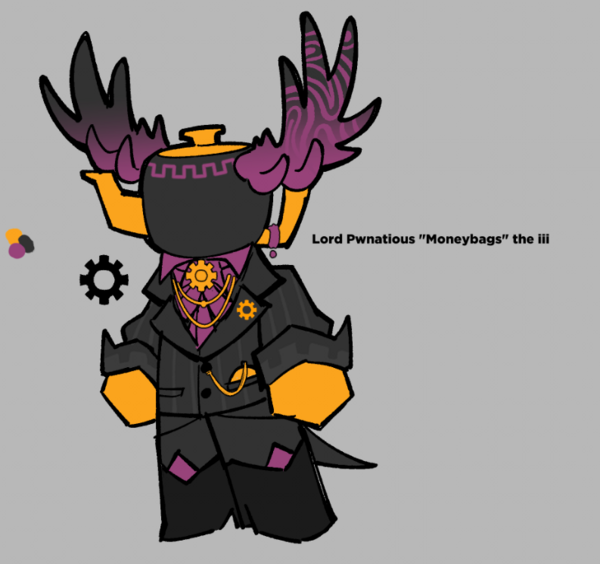

Lord Pwnatious is one of the Inphernals I will tell you about for the faction Blackrock. I would've done Subspace, but I think talking about him is more interesting.
Pwnatious is an extreme classist... (someone who favors their social class) and he hates inphernals who are poor. I am not kidding. And these are not my words but SodaKettle qoutes that he's a "nepotism baby and an asshole".
As expected, Pwnatious into a noble wealthy family of Blackrock and was taken cared of by Carnage (his personal robot) and a nanny.